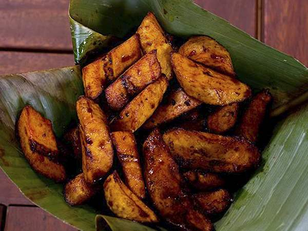

Kelewele (Spiced Fried Plantain)

Description
Ripe plantain cubes coated in a fiery ginger and pepper marinade, then fried until sweet, sticky, and caramelized at the edges. It is Ghana’s most popular evening street snack, sold hot from roadside stalls and eaten on its own or with roasted peanuts.
Origin: Ghana, where it is a street food staple across the country. The spice blend is the signature, and many vendors guard their own ratios.
Quick facts:
- Prep time: 15 minutes
- Marinate time: 12-30 minutes
- Cook time: 12-15 minutes at 245 degree celcuis
- Total time: about 2 hours
- Serves: 4 as a snack or side
Ingredients
Plantain
Spice Marinade
- 1 tbsp fresh ginger, grated (about 2 cm piece)
- 1 small onion, grated or blended
- 1 garlic clove
- 1 tsp cayenne pepper or ½ small scotch bonnet, to taste
- ½ tsp ground cloves
- ½ tsp ground nutmeg
- 1 tsp salt
- 1 to 2 tbsp water, to loosen
For frying
- About 500 ml (2 cups) vegetable oil
Steps
- Peel the plantains and cut them into 2 cm (¾ in) cubes.
- Blend the ginger, onion, garlic, and chili with the water into a smooth paste.
- Stir in the cloves, nutmeg, and salt.
- Toss the plantain cubes in the paste until evenly coated.
- Rest for 15 to 30 minutes.
- Heat the oil to 170 to 180°C (340 to 355°F).
- Fry in small batches for 3 to 4 minutes, turning once, until deep golden brown with dark edges.
- Drain on paper towels.
- Serve hot, with roasted peanuts.
Home